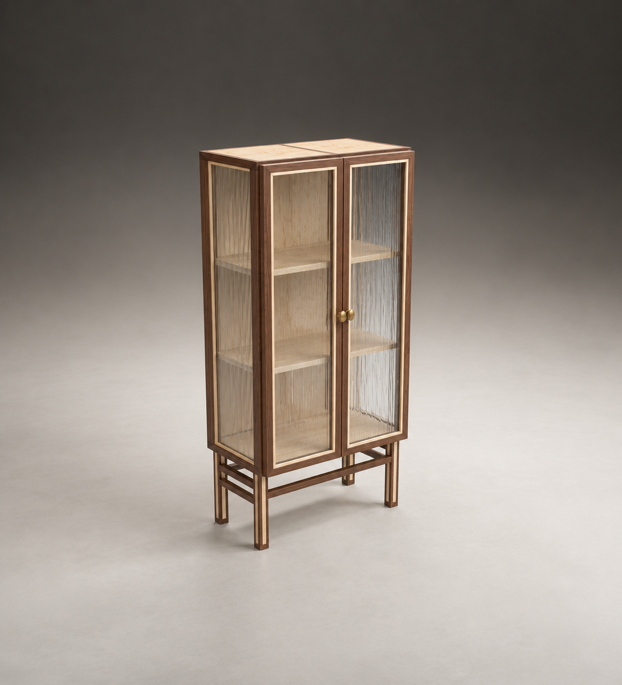

Projects
2 active items · 2026.09
Curiosity Low
胡桃木框、楓木線與長虹玻璃構成的低櫃。包含互動模型、AI 材質視角、99 件模型分解與 CAD/DXF。
開啟 D16 專案View model →

Round Arch / Double Bands
上板 Ø650、下板 Ø520、總高550 mm。楓木拱頂腳、全厚雙胡桃橫段與三層 X；七視角 AI／CAD 圖庫及原生實體下載。
開啟圓桌專案View model →
把參考資料逐步轉換成可驗證的外觀重建、工程決策與製造候選文件。AI 材質圖只表達氣氛；尺寸與零件以 CAD 模型為準。

胡桃木框、楓木線與長虹玻璃構成的低櫃。包含互動模型、AI 材質視角、99 件模型分解與 CAD/DXF。
上板 Ø650、下板 Ø520、總高550 mm。楓木拱頂腳、全厚雙胡桃橫段與三層 X；七視角 AI／CAD 圖庫及原生實體下載。